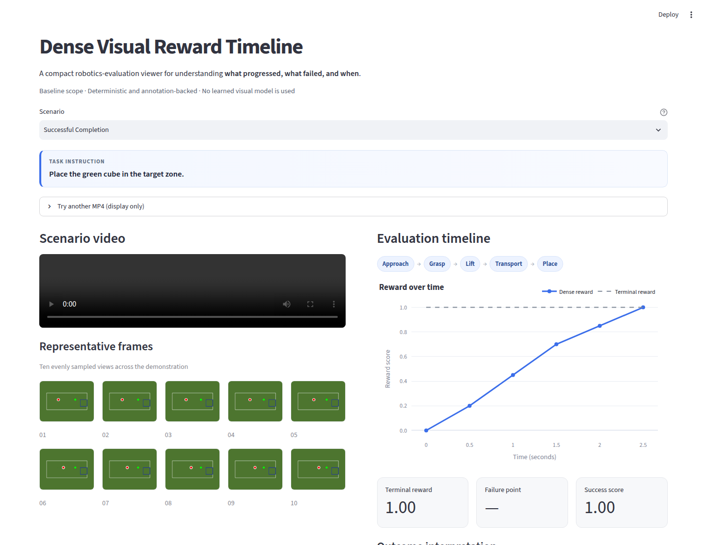
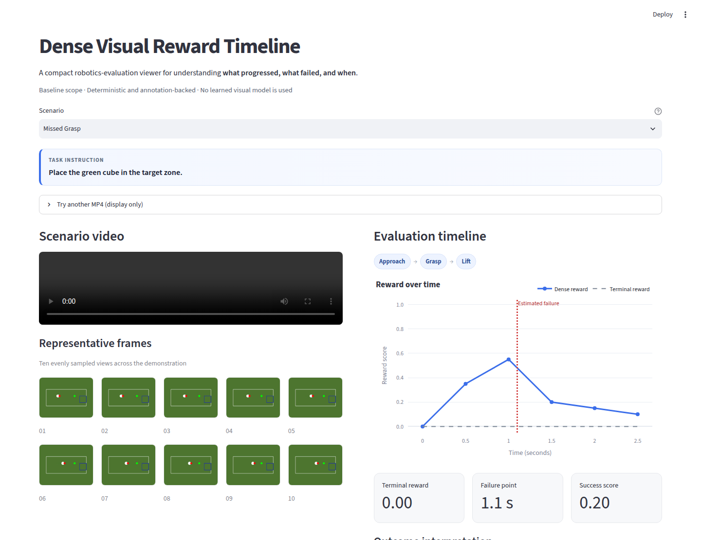

Project 01 · Temporal evaluation
Visual Reward Timeline
How do progress and failure signals evolve over time?

What the demo shows
An annotation-backed synthetic tabletop task aligns ten representative frames with dense reward, stage labels, terminal outcome, and an interpretable failure point. Success, missed-grasp, and object-drop scenarios show why a final score alone hides useful temporal structure.
Implementation approach
Deterministic scenario annotations drive a compact Python/Streamlit prototype. The public page contains presentation images only; private implementation source is not published here.
Public origins and related work
The research question draws on reward modeling, temporal credit assignment, and evaluation visualization. The prototype is an implementation study, not a claim to have originated dense reward or failure localization.
Limitations
Authored annotations, abstract synthetic video, and fixed scenarios. No learned visual model, calibrated probability, real-world evaluation, or operational claim.
Provenance statement
All depicted frames are independently generated geometric scenes. No real people, recordings, cases, confidential material, or external API appears in the demo.
Screenshot gallery

Compare notes
Working on temporal evaluation, multimodal evidence, or interpretable reward signals?
Share feedback